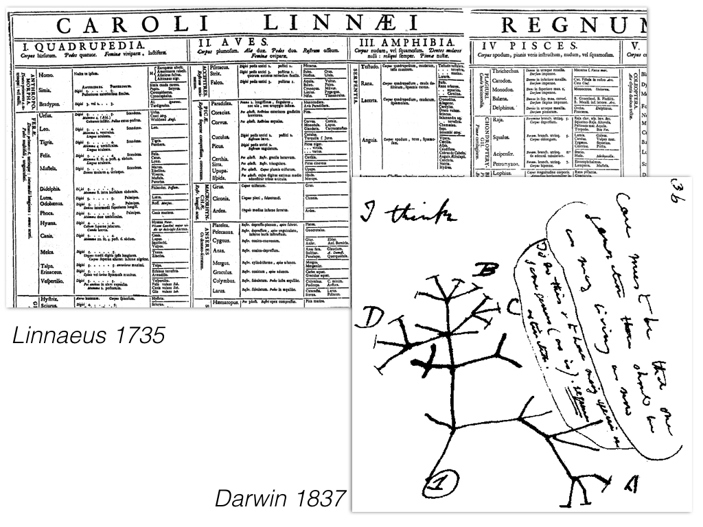

Phylogeny provides a mechanism through which to interpret the patterns and processes of evolution and to predict the responses of life to rapid environmental change. Phylogenies and phylogenetic methods are now being used to enhance agriculture, identify and combat diseases, conserve biodiversity, and predict responses to global climate change and to biological invasions.
Open Tree goals
Engage community to create a tree of life that is:
1. Complete
2. Online
3. Constantly updated